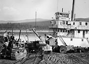
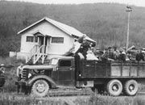
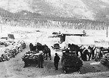
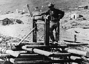
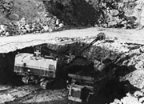
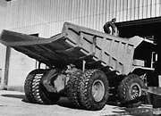

L’exploitation minière fait partie de l’histoire du Yukon depuis plus de 100 ans. Dès 1869, les commerçants de la Compagnie de la Baie d’Hudson ont trouvé des poussières d’or le long du fleuve Yukon. On a fait d’autres découvertes sur les rivières Big Salmon, Stewart et Fortymile, mais c’est la découverte de 1896 dans la vallée de la Klondike qui a changé le Yukon à jamais.
Des milliers de personnes travaillaient dans les mines, et des milliers d’autres travaillaient dans des entreprises de services. Les mineurs amenaient leurs familles dans le Nord et cela créait de la stabilité dans le territoire. La courte vie de nombreuses mines signifiait que l’occupation des maisons et des agglomérations était brève. Durant les premières années, le travail était intensif et il y avait de nombreux emplois. Toutefois, en peu de temps, la mécanisation à grande échelle a changé les fondements de l’exploitation minière. D’immenses dragues et des manoeuvres hydrauliques intenses ont remplacé les petites entreprises et de nombreuses agglomérations ayant surgi durant les premières années à proximité des ruisseaux ont disparu.
L’exploitation minière est responsable de l’avènement de nouveaux modes de transport et d’installations, ainsi que de l’établissement d’agglomérations. Après 1913, la découverte d’argent et de plomb dans la région de Mayo, de Keno et d’Elsa a transformé l’endroit en un centre économique fébrile. Dès 1927, 10 138 tonnes de marchandise passaient à Mayo, ce qui représentait plus du double de la marchandise qui passait à Whitehorse et à Dawson.
Bien qu’il y ait toujours eu des bons et de mauvais moments, l’exploitation minière est encore un aspect économique important du Yukon. L’exploitation du cuivre dans la région de Whitehorse, de l’argent à Windy Arm, du charbon au nord de Dawson, des hydrocarbures à la mer de Beaufort, de l’or dans la vallée de la Wheaton et de l’amiante à Clinton Creek a créé de nombreux emplois au Yukon.
«Tout le monde est enthousiaste à propos des mines et les personnes dans l’Est n’ont pas fini d’en entendre parler.»
Israel Albert Lee, Seattle (25 août 1897)
Passer au tableau Arts, artisanat et cultureBonnes perspectives
(Ci-dessus) Mineurs et cheval à une mine de charbon de Carmacks (1912).
AY, collection Back, 90/19 nº 128
Le bateau à aubes Nasutlin aux placers du ruisseau Gold, rivière Stewart (vers 1950).
AY, collection Pepper, 89/59 nº 15
Travailleurs de la Yukon Consolidated Gold Corporation faisant la grève au camp 9. Ils demandaient un dollar de plus par jour. (juillet 1941).
AY, collection Butterworth nº 9559
Carrioles remplies de minerai d’argent à Keno (vers 1922).
AY, collection Schellinger nº 5839
Un Autochtone à proximité d’un puits de mine, au ruisseau Bonanza (août 1900).
AY, collection Mizony nº 4250
Sous terre à la mine Pueblo, près de Whitehorse (sans date).
AY, collection Scott/Phelps, 89/31, nº 147
Mine Anvil Range, à Faro, par des températures au-dessous de zéro.
AY, collection du Bureau des Affaires publiques, 81/18, f/9
Mineur à la mine d’amiante de Clinton Creek.
AY, collection du Bureau des Affaires publiques, 81/18, f/5